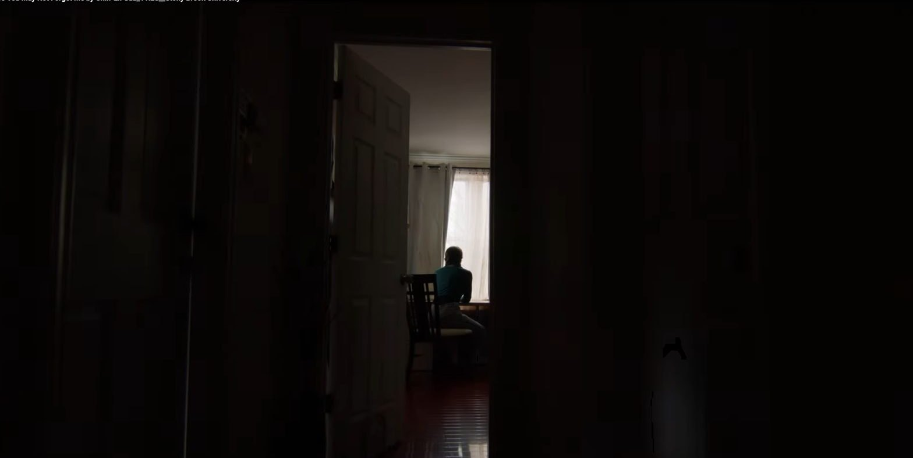
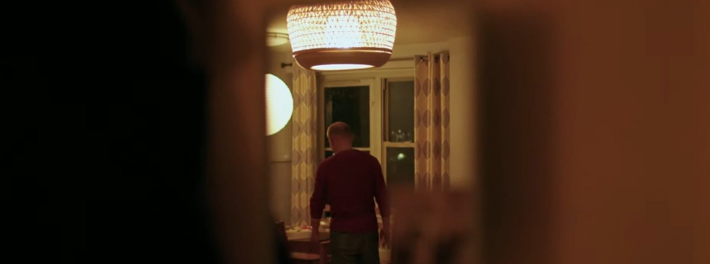
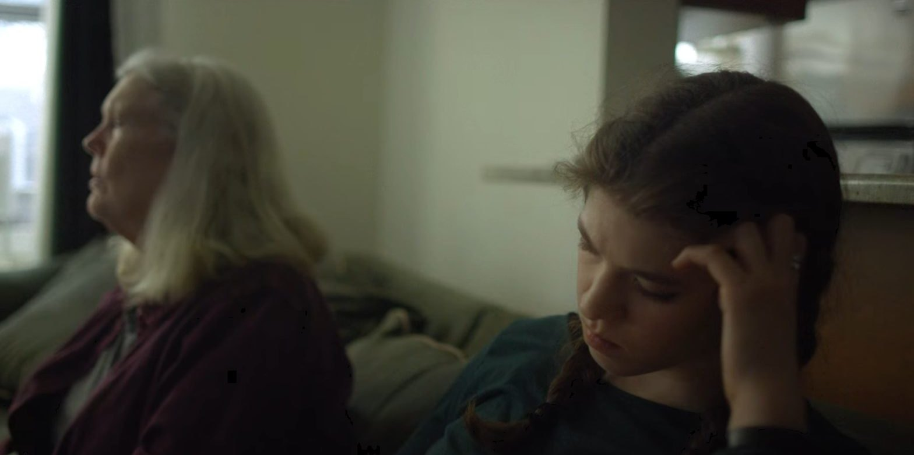
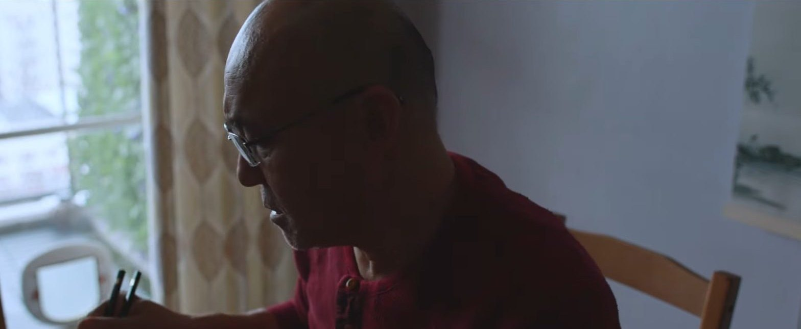

Filmmaker · New York影像創作者 · 紐約
Chin-En
Gau高靖恩
Producer · Director · Cinematographer · Editor製片 · 導演 · 攝影 · 剪接
A Taiwanese filmmaker based in New York, working between two extremes: producing chart-topping vertical short dramas for DramaBox, and directing and shooting quiet films that follow immigrants, family, and the feelings that hide inside everyday life.
一名台灣出生、現居紐約的影像創作者。他的作品穿梭在兩個極端：一方面為 DramaBox 打造登上榜首的豎屏短劇，另一方面則專注於執導與攝影，用溫柔的鏡頭記錄移民、家庭，以及那些藏在日常中難以言說的情感。
More about me更多關於我 →


TV Mini Series · Vertical豎屏迷你劇集
Verticals
Vertical short-drama series produced for DramaBox — charting No.1 in new releases, with over two million views a day at peak.為 DramaBox 製作的豎屏短劇，曾登上新片榜第一，單日觀看最高突破兩百萬。
Enter進入 →









Features · Shorts · Documentary長片 · 短片 · 紀錄片
Films
Narrative and documentary work as director, cinematographer and editor — Film at Lincoln Center, Tribeca, Sundance Documentary Fund.以導演、攝影與剪接身分參與的敘事片與紀錄片——林肯中心電影協會、翠貝卡影展、日舞影展紀錄片基金。
Enter進入 →